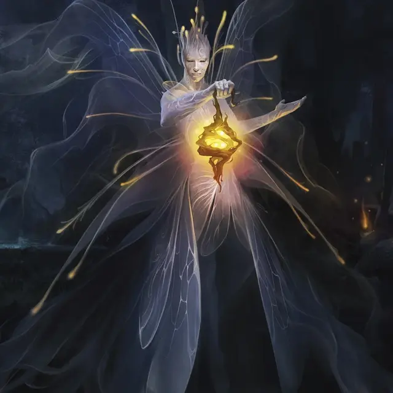

Фея-следопыт
Faerie Pathlighter
Средняя Фея, хаотично-нейтральная

Класс Доспеха 12
Хиты 31 (7к8)
Скорость 30 футов, летая 30 футов (парит)
| мод | спас | ||
|---|---|---|---|
| СИЛ | 10 | +0 | +0 |
| ЛОВ | 14 | +2 | +2 |
| ТЕЛ | 12 | +1 | +1 |
| мод | спас | ||
|---|---|---|---|
| ИНТ | 13 | +1 | +1 |
| МДР | 17 | +3 | +3 |
| ХАР | 18 | +4 | +4 |
Навыки Восприятие +5, Выживание +5, Проницательность +5
Чувства пассивное Восприятие 15
Языки Общий, Сильван
Опасность 2 (450 опыта)
Бонус мастерства +2
Особенности
Фейское свечение. Фея излучает тусклый свет в радиусе 15 футов.
Действия
Мультиатака. Фея совершает две атаки Сияющим ударом.
Сияющий удар. . Дальнобойная или рукопашная атака заклинанием: +6 к попаданию, досягаемость 5 фт. или дистанция 30 фт., одна цель. Попадание: 7 (2к6) урона излучением, и если цель — существо, оно должно преуспеть в спасброске Ловкости Сл 14, иначе будет окутано светом до конца следующего хода феи. Пока существо окутано светом, броски атаки по нему совершаются с преимуществом, и существо не может получить выгоду от состояния невидимости.
Использование заклинаний. Фея может наложить одно из следующих заклинаний, которые не требуют материальных компонентов и использующих Харизму в качестве базовой характеристики для заклинания:
• Неограниченно: пляшущие огоньки [dancing lights], обнаружение магии [detect magic], фокусы [prestidigitation];
• 1/день: поиск существа [locate creature].
Бонусные действия
Путеводный свет (2/день). Фея вызывает сферу магического света радиусом 30 футов, с центром на себе, существующую в течение 1 минуты или до тех пор, пока фея не станет недееспособной. Каждое существо по выбору феи (кроме самой феи), начинающее свой ход в этой области, получает 5 временных хитов и с преимуществом совершает спасброски и проверки Мудрости до начала своего следующего хода.
Сфера излучает яркий свет и тусклый свет на дополнительные 30 футов и перемещается вместе с феей. Если какая-либо область сферы перекрывается с областью тьмы, созданной заклинанием 3-го уровня или ниже, заклинание, создавшее тьму, рассеивается.
Описание
«Хорошо это или плохо, но большинство фей не могут удержаться от того, чтобы вмешаться в приключения любого встречного рыцаря».
Феи-следопыты иногда вмешиваются в человеческие жизни, для того, чтобы помочь (как классическая фея-крестная), а иногда и для того, чтобы навредить. В дебрях Элдраина феи-следопыты часто служат защитниками заблудших, а свет их путеводных фонарей помогает усталым путникам передохнуть.
Фея-следопыт имеет почти ангельскую внешность. Большие белые крылья к краям становятся почти прозрачными. Частицы волшебного света плывут вокруг головы, а тело окружает слабая белая аура.
Феи
Феи Элдраина - это крылатые эльфийские существа, похожие на спрайтов или пикси. Непредсказуемые, ненадежные и аморальные, они скрываются в диких землях и преследуют путников, которых считают нарушителями.
Уфы
Уфы - любопытные существа, встречающиеся в диких землях Элдраина. Хотя их часто считают глупыми, уфы магически связаны с миром природы и знают о тайной жизни деревьев, грибов и мха больше, чем большинство смертных. Хотя уфы и связаны с феями Элдраина, феи относятся к ним как к далеким (и несколько неловким) кузенам. Уфы могут быть представлены с помощью блоков характеристик пикси [pixie] или спрайтов [sprite].